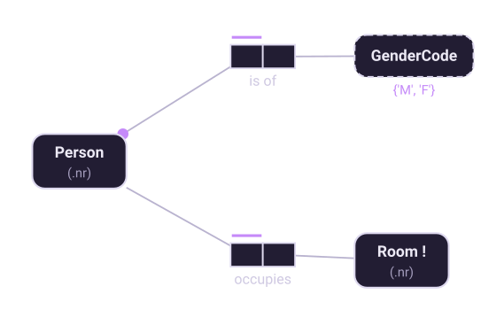
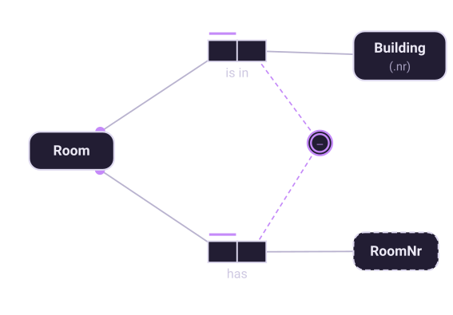

Chapter 3 of 10
Objects and reference schemes
Everything in an ORM model is an object. The interesting question is how you refer to one.
Two kinds of object
ORM divides objects into entities and values.
- A value is a character string or a number. It identifies itself: the string
'Adams A'needs nothing else to be understood. Value types are drawn with a dashed outline. - An entity is a thing in the world — a person, a room, an access level. It cannot identify itself, so it is referred to by a definite description: the Academic with empNr 715. Entity types are drawn with a solid outline.
Entities need not be tangible. An access level or a department is as much an entity as a person is; what matters is that it is referred to rather than written down directly.

Reference modes
Writing Person(.nr) is shorthand. Spelled out, it declares a binary fact type between
the entity type and a value type, constrained so that the mapping is an injection: each
Person has exactly one PersonNr, and each PersonNr refers to at most one Person. Factum verbalizes
exactly that:
Each Person has exactly one PersonNr; each PersonNr refers to at most one Person.The abbreviation exists because reference fact types are numerous and boring. Every entity type needs one, and drawing them all would double the size of the diagram for no insight. So they are collapsed into a parenthesis — but it is worth remembering that a reference mode is a fact type with constraints on it, not a special kind of attribute that sneaked back in.
Choose reference modes from the domain, not from the database. If the business identifies employees by employee number, that is the reference mode, even if the table will eventually have a surrogate key. Surrogate keys are a mapping decision; Factum will add one for you when a type has no reference scheme, and will tell you it did so.
Composite reference
Sometimes one value is not enough. A room number like '301' only identifies a room
within a building; the same number exists in every building on campus. The identifier is the
combination of building and room number.

This is an external uniqueness constraint: it spans roles in two different fact types, and asserts that the combination is unique across the join. Mark it as the preferred identifier and it becomes Room's reference scheme.
This is also the moment where the earlier shortcut is repaid. If you had modeled rooms as the
string '69-301', everything works until someone asks for the name of the building —
and now you are parsing identifiers. Composite reference says what was true all along.
Independent object types
Normally an entity type earns its place by playing roles: a Person exists in the model because people work for companies and have names. But some object types need to exist whether or not anything is currently said about them. A room in a new building is still a room before anyone is assigned to it; a product in a catalogue exists before anyone orders it.
Marking a type independent — shown with a trailing ! — says exactly
this: instances may exist without playing any fact role. It matters when you map the model, since
an independent type needs a table of its own even if every one of its facts is optional.
Data types come last
A value type may carry a data type — string, integer, date, and so on — and a length or scale. This is the one place where implementation detail is allowed into a conceptual schema, and it is there because the mapping needs it. Set it when you know it; leaving it unset is not an error, and Factum defaults to a string.
Resist the urge to fill these in early. A conversation about whether empNr is an
integer or a string is a conversation about storage, and it will distract from the question that
matters at this stage — which is whether empNr identifies an academic at all.
Going further. This chapter is the short version. Fact-Based Agents covers it as “Reading the Diagram” — the three shapes, every circled glyph, and reference schemes worked through beside the sentences they generate.
Eighteen chapters, 61 diagrams and 38 working models, on Leanpub.